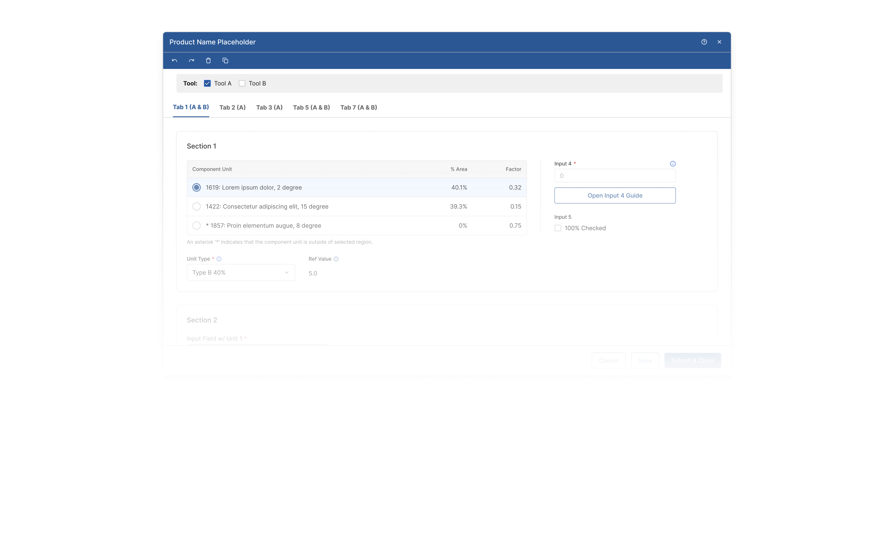
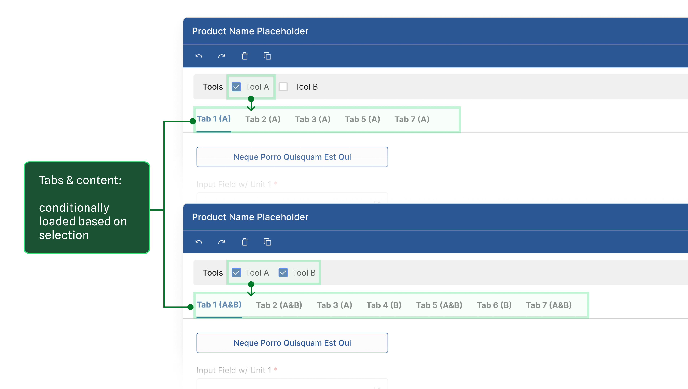
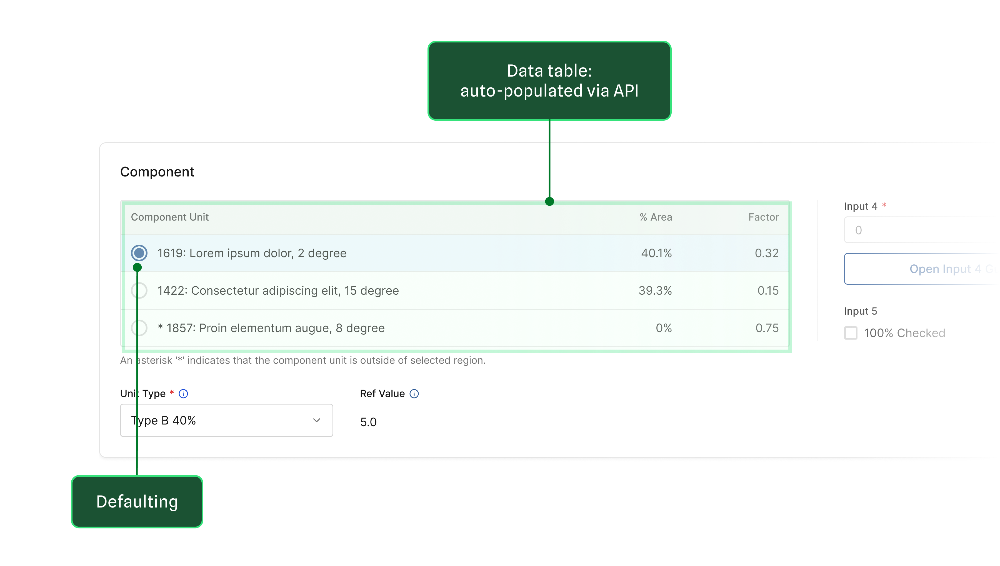
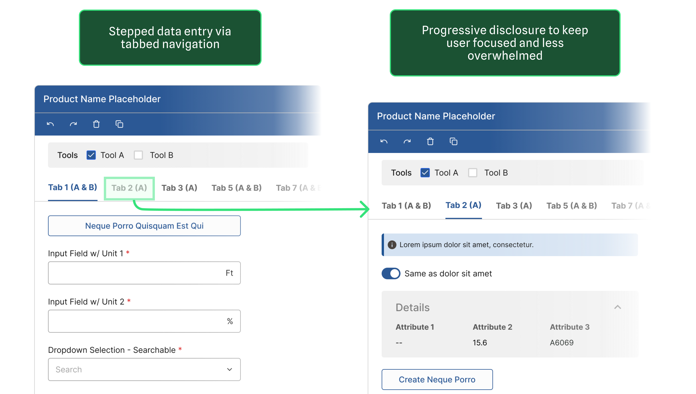

Problem
Government workers skipped conducting required assessments because the legacy tools were too complex.
The organization wanted to integrate the two tools into their existing enterprise platform with unified UI.

Help government workers complete assessments 50% faster by embedding simplified workflows from legacy tools.
Confidential Work
Client details, user data, and business metrics are anonymized or generalized. The focus is on my process: research, design decisions, and how I worked with teams.
Government workers skipped conducting required assessments because the legacy tools were too complex.
The organization wanted to integrate the two tools into their existing enterprise platform with unified UI.
*Estimation. The project got cancelled before production rollout.

Legacy App Domain Experts (Scientists)
Enterprise Software Team
New Design System Team
Legacy App Trainers (Veteran Staff)
Preserving scientific accuracy and method fidelity.
Workflow continuity with the rest of the platform.
Visual consistency across a still-evolving system.
Easy-to-find training materials and documentation.
“The science should not be reduced.”
“Make sure your design fits into the larger workflow.”
“It's important to keep a unified look across all apps.”
“It's hard to find good training docs; I need to develop my own.”
format_quote How might we maintain scientific integrity while simplifying the workflow for users who are not domain experts? format_quote
Key Insight #1
It's like handing an amateur a professional high-end digital camera, when all they need is the camera app on their phone.
Key Insight #2
Domain Experts & Trainers
Gov Staff (majority of users)
“Templates are useless. It's faster to build from scratch.”
“Having to build from scratch every single time is tedious and unrealistic.”
Key Insight #3
A generation of veteran staff retired and took their knowledge with them. New hires, most without a technical background, had no good way to pick up tools that were already hard to learn.
To combine the two tools, I used OOUX methods to create an object map. It gives me the "bones" of the interface and interactions for simplifying the workflows.

Every week I worked alongside the enterprise software team and the legacy app scientists to pressure-test my decisions.
Design Decision #1
Makes the UI less overwhelming and more straightforward.

Design Decision #2
Removes the hassle of hunting for the right data from multiple sources.

Design Decision #3
The workflow was boiled down to its core and became more learnable.

To evaluate if I was on the right track, I conducted quick usability study using wireframes.
“I won’t go back to legacy tools.”
The project was cancelled before it shipped. Below is how I intended to track the metrics.
Baselined for comparing legacy tools with final designs.
Planned for collection with stakeholders after rollout.
Projected Targets (If Launched)
*Note: These metrics are targets, not actually measured.
Learning
Retrospection